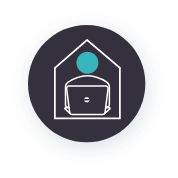

Willingness to Learn
Willingness to Learn
Home / Willingness to Learn
Development Tips for Improving – WILLINGNESS TO LEARN
As per the individual skills gap report, try the following:
- Motivate yourself by learning practical notions, in a learning-by-doing approach instead of more theoretical approaches.
- Dedicate a small amount of time every week to read something new, or challenging one competency or skill, can help integrating self-development in your work routine.
Here are some further development tips to consider:

Replace the word “failing” with “learning”
Practice


Listen to the Mindset Voice Inside of You
- Internal dialogue like “What if you fail?” or “If you don’t try, nobody will see you fail,” means you have a fixed mindset voice inside. It’s important to listen to your internal mindset voice so you can truly discover what type of mindset you have. This is the first step to successfully changing your mindset.
- Always remember that desire to learn is the path to making your dreams a reality. Repeat it yourself every single day. If you want to succeed, you have to be up-to-date!